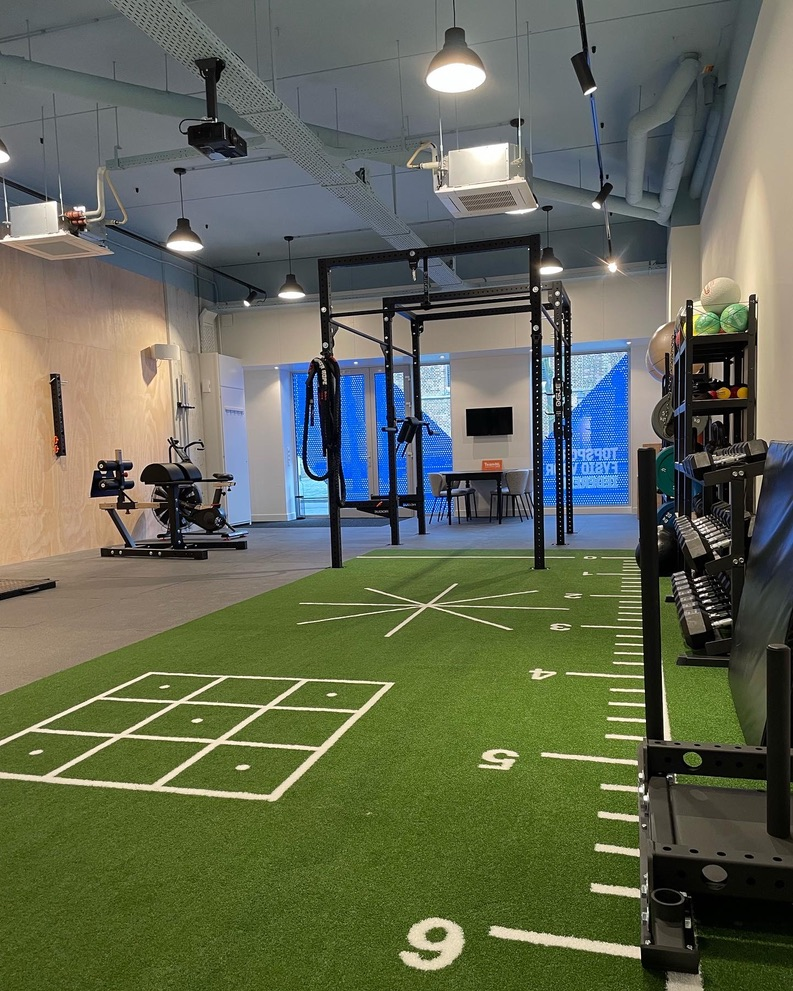
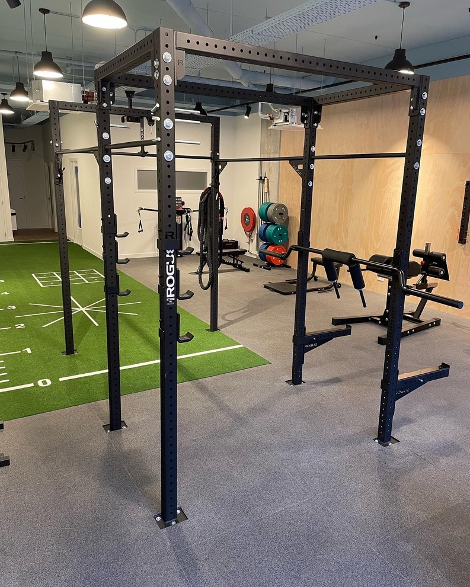
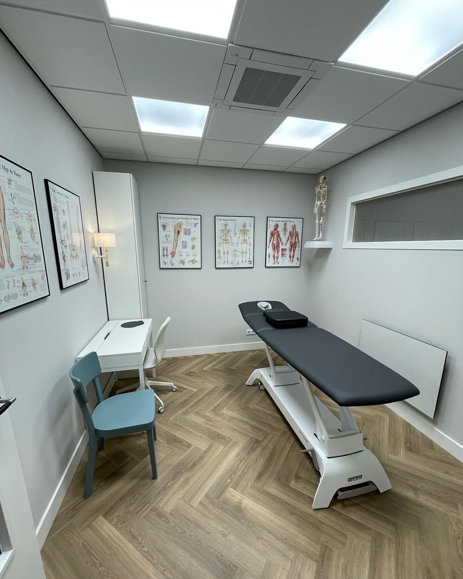
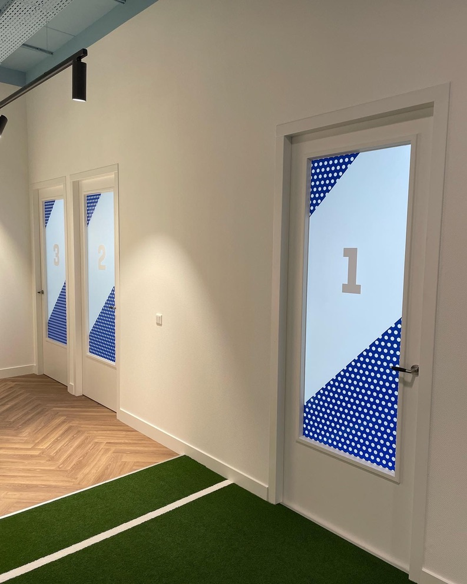
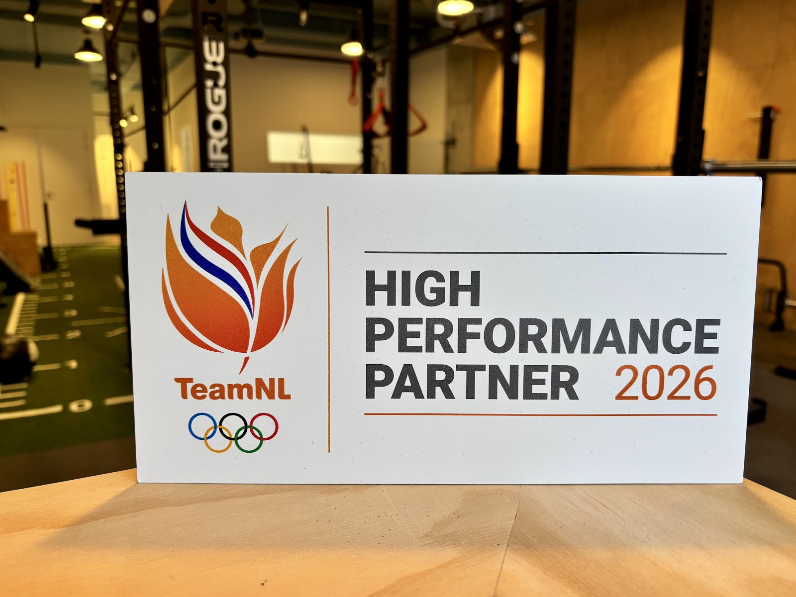
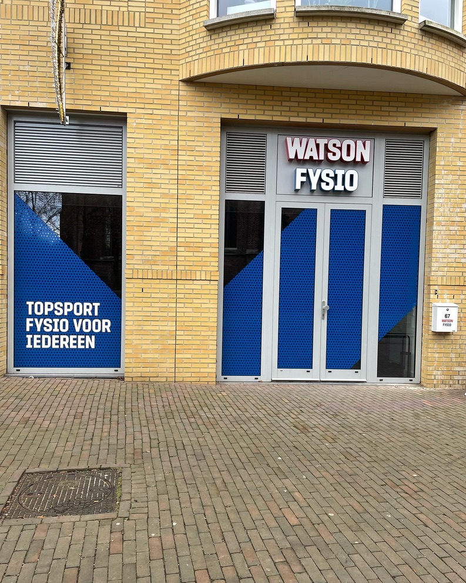

Fysiotherapie in het centrum van Ede
Topsport fysio voor iedereen
Wil je van je klachten af, of nog scherper kunnen trainen? Onze fysiotherapeuten werken met topsporters en behandelen jou met dezelfde kennis.
Ma t/m do tot 21:30 open, ook op zaterdagochtend.

Waar loop je tegenaan?
Twijfel je welke behandeling bij je past? Bel of mail ons, we denken graag met je mee.
Pijn en klachten
- Fysiotherapie
- Voor acute, langdurige of terugkerende klachten. We zorgen dat ze niet erger worden of terugkomen, zodat je weer zonder pijn beweegt.
- Manueel therapie
- Een specialisatie met extra kennis van de bewegingsmogelijkheden van het lichaam, en van de wervelkolom in het bijzonder.
- Dry needling
- Met een hele dunne, droge naald prikken we spierknopen aan. Daardoor ontspant een spier snel en langdurig.
Sport en blessures
- Sportfysiotherapie
- Voorkomen en behandelen van sportblessures. Ook voor ouderen en kinderen, en voor wie wil gaan sporten maar niet weet hoe.
- Sportrevalidatie
- Geblesseerd bij het sporten of op je werk? We bouwen je belastbaarheid verantwoord op tot je weer op je gewenste niveau zit.
Na een operatie of ongeval
- Orthopedische revalidatie
- Na een operatie aan je enkel, knie, heup, schouder of elleboog. In nauwe samenwerking met diverse specialisten.
- Revalidatie bij letselschade
- Voor lichamelijke klachten na een verkeers- of bedrijfsongeval. De behandeling wordt vaak vergoed door de letselschadeverzekering van de tegenpartij.
Sterker worden
- Performance training
- Eén op één trainen onder begeleiding van een fysiotherapeut met topsportervaring. Kan vaak naast je behandelingen.
Van topsporter tot bankzitter
Midden in Ede heb je meerdere behandelkamers en een gym met veel trainingsmogelijkheden. Behandelen en trainen gebeurt onder één dak.



Het team
Al onze fysiotherapeuten hebben ervaring met het behandelen van topsporters. Die kennis is de basis van elke behandeling.
Ross Watson, MSc
Fysio- en manueel therapeut
“Vanuit mijn ervaring als American Football en Rugby speler en als fysiotherapeut en performance trainer van AFC Ajax, het Nederlands waterpoloteam en vele andere topsporters, weet ik daarnaast hoe belangrijk het is om te kunnen vertrouwen op de mensen waarmee je samenwerkt. (…) Tijdens de revalidatie kijk ik graag naar wat er allemaal wel mogelijk is, in plaats van wat de restricties zijn.”
Silja Kok
Fysiotherapeut
“Door mijn jarenlange ervaring als internationaal judoka weet ik hoe belangrijk het is om naar het lichaam te luisteren.”
Joshua van der Wilt
Fysiotherapeut, Manueel therapeut MSc i.o.
“Er is niets mooiers dan zien hoe mensen het vertrouwen in hun eigen lichaam weer terugvinden.”
Dion Harreman
Fysiotherapeut i.o., Performance Trainer, Sportmasseur
“Voor mij staan luisteren, samenwerken en persoonlijke aandacht centraal.”
Ivon Watson - van der Horst, MSc
Praktijkmanager
“In de dagelijkse praktijk maak ik het fysiotherapeuten graag zo makkelijk mogelijk om goede kwaliteit van zorg te leveren.”

High Performance Partner van NOC*NSF en TeamNL
De kennis die we in de topsport gebruiken, zetten we in voor iedereen die bij ons binnenloopt.
Wat patiënten zeggen
5 sterren uit 39 Google-reviews
“Na een ingrijpende operatie ben ik de afgelopen 4 maanden (en nu nog steeds) bij Silja onder behandeling geweest voor mijn revalidatie. Dankzij haar begeleiding heb ik stap voor stap weer kracht opgebouwd en werk ik nu toe naar volledige mobiliteit. Silja is erg prettig in de omgang en neemt uitgebreid de tijd …”
“Bij Watson Fysiotherapie word je vanaf het allereerste moment serieus genomen. Ze nemen de tijd om je de juiste behandeling te geven. Sinds ik bij Watson ben begonnen, heb ik nieuwe inzichten gekregen die ik eerder niet had bij mijn vorige fysiotherapeut. Het heeft me geholpen om het beste uit mijn sport te halen …”
“Tijdens al mijn jaren actief te trainen heb ik met Watson eindelijk de fysio gevonden die bij mij past. Ik heb een aantal sportblessures gehad, niks ernstigs, maar het weerhield mij er wel van om optimaal op niveau te kunnen presteren. Bij Watson begrijpen ze dit als geen ander …”
“Vakkundig spontaan snel betrouwbaar met één woord top”
Kom eens langs
Bel of mail voor een afspraak. We adviseren je graag welke behandeling het beste bij je vraag past.
Watson Fysio Ede CentrumOude Kerkplein 67
6711 AZ Ede
Route in Google Maps

Openingstijden
| Maandag | 08:00 tot 21:30 |
| Dinsdag | 08:00 tot 21:30 |
| Woensdag | 08:00 tot 21:30 |
| Donderdag | 08:00 tot 21:30 |
| Vrijdag | 08:00 tot 19:00 |
| Zaterdag | 08:00 tot 13:00 |
| Zondag | Gesloten |
Ook in Ede
Ede Op Enka, Krimperij 42
Ede Stadspoort, Stadspoort 2A